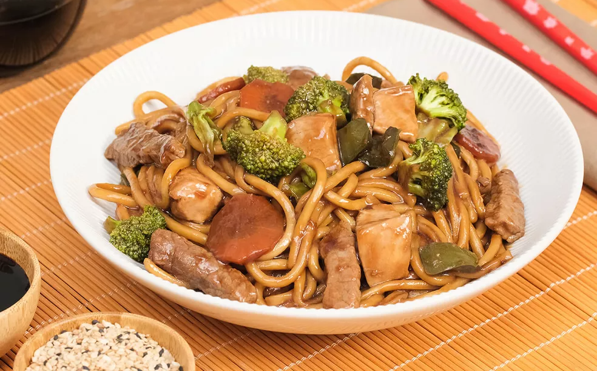

Ingredientes
yakisoba

- 500 g de coxão mole em tiras
- 500 g de peito de frango em tiras
- 2 cenouras cortadas bem finas
- 1 brócolis ninja
- 1 couve flor
- 1/2 pimentão
- 1 cebola
- 1/2 maço de acelga
- 2 pacotes de macarrão para Yakisoba
- 2 sachês de molho próprio para Yakisoba
- 6 colheres de óleo